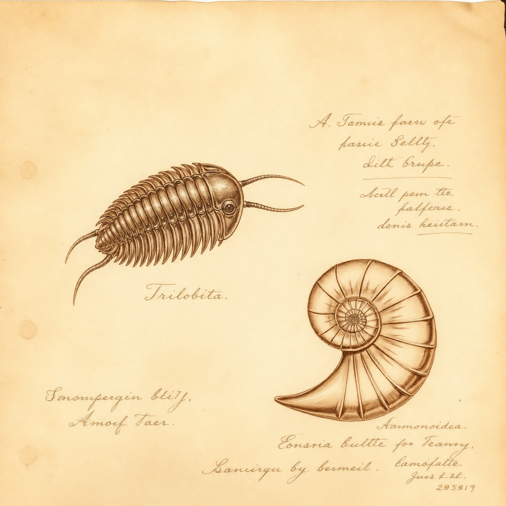
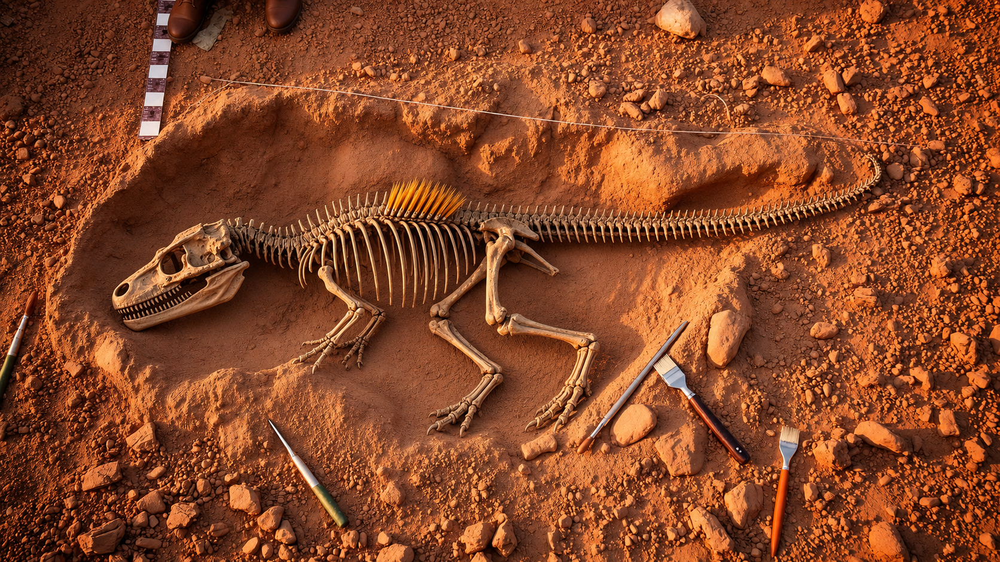
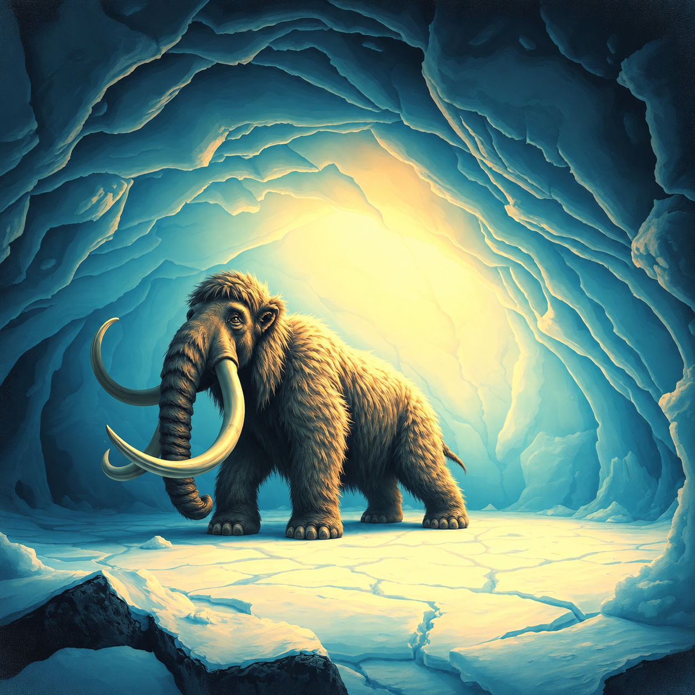
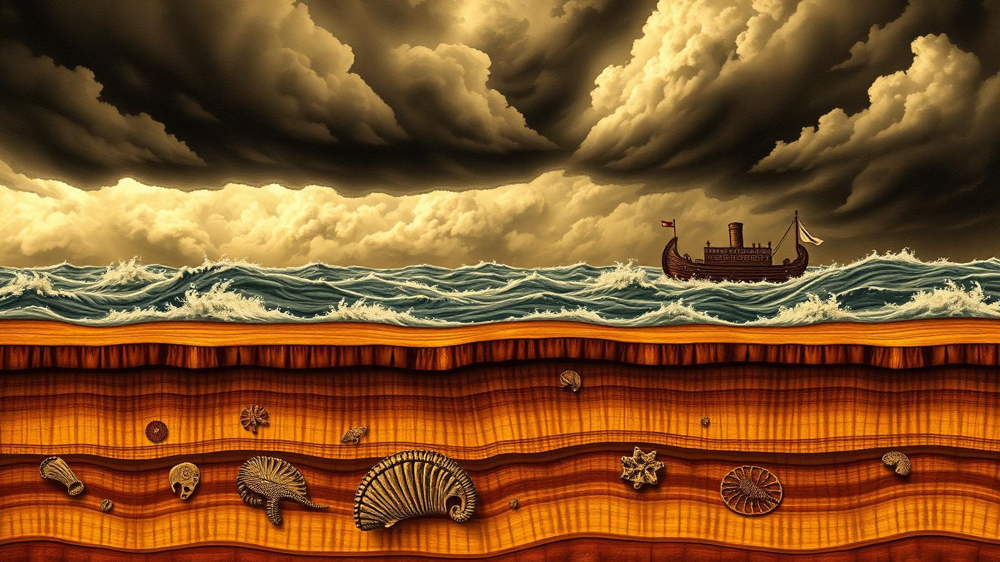

Permineralização
Águas ricas em minerais (sílica, carbonato de cálcio, pirita) infiltram-se nos poros do osso ou da madeira e cristalizam ali. O organismo mantém a forma, mas se transforma em pedra. É o processo da madeira petrificada.
Pedras que falam. Ossos que oram. Conchas petrificadas que testemunham um mundo antigo perdido sob as águas — e sob a misericórdia do Criador. Um caderno de campo do desbravador.
Fósseis são restos, vestígios ou impressões de seres vivos — plantas, animais, microrganismos — que viveram no passado e foram preservados, em geral, dentro de rochas sedimentares. A palavra vem do latim fossilis, "aquilo que se desenterra".
Para que algo se torne fóssil, foi preciso que o organismo fosse rapidamente coberto por sedimentos, isolado do oxigênio e dos animais necrófagos. Por isso a maior parte dos fósseis do mundo é encontrada em camadas claramente formadas por água — uma pista importantíssima para o estudante criacionista.
Quando olhamos uma amonita encerrada em pedra ou a pegada de um réptil endurecida no calcário, estamos diante de uma cápsula do tempo — não de milhões de anos lentos, mas, conforme veremos, de um cataclismo súbito e gigantesco.

Nem todo organismo morto vira fóssil — pelo contrário, é evento raríssimo. Quando ocorre, segue, em geral, um destes caminhos:
Águas ricas em minerais (sílica, carbonato de cálcio, pirita) infiltram-se nos poros do osso ou da madeira e cristalizam ali. O organismo mantém a forma, mas se transforma em pedra. É o processo da madeira petrificada.
O material original se dissolve aos poucos enquanto é trocado, molécula por molécula, por outro mineral. O resultado é uma cópia perfeita em pedra — às vezes em opala ou quartzo.
O organismo se decompõe dentro do sedimento e deixa um molde oco. Se esse molde se enche de outro material, forma-se um contramolde com a forma exata do ser vivo.
Folhas, peixes e insetos perdem voláteis sob pressão e calor e deixam uma película fina de carbono impressa na rocha. É como se a vida tivesse sido fotografada em preto sobre a pedra.
Em casos raros, o organismo é preservado quase intacto: insetos em âmbar, mamutes no gelo, mamíferos em asfalto ou turfeiras. São testemunhos vívidos de uma morte súbita.
Não o corpo, mas o rastro: pegadas, tocas, ovos, coprólitos (fezes fossilizadas). Mostram como o animal vivia, andava, comia — uma assinatura no barro endurecido.
Fóssil é o termo geral: qualquer evidência preservada de vida antiga, seja o corpo, seja o vestígio que ela deixou.
Somatofóssil (do grego soma = corpo) é o fóssil do próprio organismo — ossos, dentes, conchas, troncos, folhas, escamas. Tudo o que era parte do corpo do ser vivo.
Icnofóssil (do grego ikhnos = rastro) é o fóssil de uma atividade do ser vivo: pegadas, marcas de arrasto, tocas, ovos, ninhos, coprólitos, marcas de dentes. Não é o corpo — é o que o corpo fez.
Há ainda os chamados fósseis químicos (biomarcadores), moléculas orgânicas preservadas, e os pseudofósseis, estruturas naturais que parecem fósseis mas não são.

Vinte verbetes que todo desbravador de fósseis precisa carregar na mochila — escritos como em um velho dicionário de naturalista do século XIX.
Ciência que estuda a Terra: sua composição, estrutura, dinâmica e história, a partir das rochas, minerais e formações que a constituem.
Restos ou vestígios de organismos antigos preservados em rochas sedimentares, gelo, âmbar ou asfalto.
Teoria que afirma que a face da Terra foi moldada principalmente por grandes catástrofes súbitas — em especial o Dilúvio bíblico — e não por processos lentos uniformes.
Molusco bivalve (mexilhão, ostra, amêijoa) cujo "pé" tem forma de machado (pelekys = machado). Abundantes no registro fóssil.
Animal colonial marinho extinto, de aspecto serrilhado, fossilizado em forma de pequenas inscrições escuras na rocha — daí o nome (grapto = escrito).
Artrópode marinho extinto, de corpo dividido em três lobos longitudinais. Um dos fósseis mais clássicos e abundantes do mundo.
Grupo de répteis terrestres, muitos de grande porte, hoje extintos. O nome significa "lagarto terrível". Para o criacionista, foram criados na semana da criação junto aos demais animais.
Mamífero proboscídeo extinto, parente do elefante, coberto de pelos longos, com presas curvadas. Vários foram encontrados congelados na Sibéria.
Proboscídeo extinto semelhante ao mamute, porém com dentes diferentes, adaptados a folhas e galhos. Habitou as Américas.
Equinoderme marinho ("lírio-do-mar"), fixo ao fundo por um caule articulado. Seus segmentos circulares aparecem em milhões no calcário.
Braquiópode de concha alongada, considerado um "fóssil vivo": espécies atuais são quase idênticas às fósseis — evidência forte contra a evolução gradual.
Protozoário marinho microscópico de carapaça calcária. Suas conchinhas formam enormes depósitos de calcário e giz.
Protozoário microscópico de esqueleto silicoso, geometricamente belíssimo. Forma depósitos de rochas silicosas (radiolaritos).
Na coluna geológica clássica, "era da vida antiga", com trilobitas, peixes primitivos, anfíbios. Para o criacionista, corresponde a camadas iniciais do Dilúvio.
"Era da vida intermediária" — dinossauros, répteis marinhos, amonitas. Camadas depositadas em fases avançadas do Dilúvio.
"Era da vida nova" — mamíferos, aves modernas, homem. Camadas pós-diluvianas, incluindo a glaciação subsequente.
Época geológica das grandes glaciações; momento em que mamutes, mastodontes e tigres-dente-de-sabre coabitaram com o homem. Pós-Dilúvio.
Ciência que estuda os seres vivos do passado por meio dos fósseis.
Ramo da paleontologia dedicado às plantas fósseis: troncos, folhas, sementes, pólen.
Invertebrado marinho de duas conchas (parece um molusco, mas não é). Tem um "braço-pé" (lofóforo) para filtrar a água. Abundantíssimo nas rochas paleozoicas.

No norte da Sibéria e do Alasca foram encontrados mamutes inteiros, com pele, pelos e carne ainda preservados dentro do solo congelado. Alguns tinham, no estômago, plantas verdes e ainda não digeridas — botões-de-ouro, capim, ranúnculos — vegetação que não cresce hoje nas geladas tundras onde os animais foram achados.
Isso indica duas coisas extraordinárias:
1) Aquelas regiões árticas já tiveram clima ameno e vegetação abundante — provavelmente um clima temperado uniforme, como o que a Bíblia descreve para o mundo antediluviano (Gn 2:5-6).
2) A morte foi súbita e o congelamento, imediato: não há tempo, em uma morte lenta, para preservar conteúdo estomacal e flores intactas. Algo catastrófico mudou o clima de forma quase instantânea.
Os criacionistas associam o fenômeno ao Dilúvio (cerca de 4.500 anos atrás) e à glaciação rápida que se seguiu, quando os oceanos aquecidos pelo vulcanismo evaporaram massivamente e despejaram nevadas colossais sobre os polos recém-resfriados.

Quase todos os fósseis do mundo estão em rochas sedimentares — rochas formadas por água carregando sedimentos. E a maioria das criaturas fossilizadas é marinha, mas é encontrada nos continentes, inclusive no alto das montanhas. Conchas no topo dos Andes, peixes no Himalaia, amonitas no sertão do Brasil.
O Gênesis (capítulos 6 a 9) descreve uma catástrofe planetária: "todas as fontes do grande abismo se romperam e as comportas dos céus se abriram" (Gn 7:11), cobrindo as montanhas mais altas (Gn 7:19-20). Foi um evento exatamente capaz de produzir o que vemos.
O Dilúvio explica de modo direto: (1) a sepultura rápida necessária para fossilizar; (2) as gigantescas camadas sedimentares estendidas por continentes inteiros; (3) a mistura caótica de organismos marinhos e terrestres em um mesmo estrato; (4) as enormes "covas comuns" — leitos com milhares de dinossauros e mamíferos amontoados, sinal de fuga e morte súbita.
Ellen G. White, no Patriarcas e Profetas, descreve cenas exatamente compatíveis: árvores arrancadas, animais soterrados em massa, montanhas remodeladas pelas águas e ventos. Os fósseis são o álbum de fotos do Dilúvio.
Carvão, petróleo, fósseis e calcário — quatro tesouros guardados no subsolo que, à luz das Escrituras e dos escritos de Ellen G. White, têm origem ligada ao Dilúvio e seus efeitos.
Imensas florestas antediluvianas foram arrancadas pelas águas do Dilúvio, empilhadas em vastas jangadas, soterradas por sedimentos e comprimidas. Sob calor, pressão e a ação de águas minerais, transformaram-se em camadas de carvão.
↳ Gn 7:11-24 · Patriarcas e Profetas, cap. 7, "O Dilúvio"Resulta principalmente de organismos marinhos (plâncton, peixes, algas) e vegetação soterrados em grande quantidade pelas águas diluvianas, decompostos sob pressão, calor moderado e ausência de oxigênio em rochas sedimentares.
↳ Gn 7:19-22 · Patriarcas e Profetas, cap. 8São o testemunho silencioso dos bilhões de plantas e animais sepultados rapidamente pelas águas e sedimentos do Dilúvio. "E expirou toda carne que se movia sobre a terra" (Gn 7:21).
↳ Gn 7:21-23 · 2 Pe 3:5-6Formado pelo acúmulo massivo de carapaças calcárias de foraminíferos, conchas, corais e crinoides, depositados em curto tempo pelas águas turbulentas do Dilúvio, formando camadas que cobrem regiões inteiras.
↳ Gn 7:24 · Spiritual Gifts, vol. 3, "Disguised Infidelity""Antes do Dilúvio havia imensas florestas… Quando vieram as águas, essas florestas foram arrastadas e enterradas profundamente no solo. Lá, com o tempo, se transformaram em carvão e petróleo." — Ellen G. White, Patriarcas e Profetas (sentido)
Diante do mesmo fóssil, dois leitores muito diferentes contam histórias muito diferentes. A diferença não está nos ossos — está nas lentes.
Os fósseis se acumularam ao longo de milhões de anos, por processos lentos e uniformes (uniformitarismo). Cada camada representa uma "era".
As formas mais simples estão embaixo; as mais complexas em cima — isso mostraria a evolução gradual da vida.
Espera-se encontrar inúmeros fósseis de transição entre os grupos.
O homem teria surgido há cerca de 200 mil anos a partir de ancestrais comuns aos macacos.
Os fósseis foram formados rapidamente, em sua grande maioria pelo Dilúvio global e por catástrofes posteriores (vulcanismo, glaciação).
A ordem dos fósseis nas camadas reflete ecologia, mobilidade e hidrodinâmica: organismos do fundo do mar foram soterrados primeiro; mamíferos e aves, capazes de fugir, foram preservados em camadas superiores.
Os "fósseis de transição" são raríssimos e contestados. Vê-se estase — espécies surgindo prontas e desaparecendo prontas.
O homem foi criado por Deus à Sua imagem (Gn 1:27), há cerca de 6.000 anos.
"Pois, voluntariamente, ignoram isto: que pela palavra de Deus já existiam os céus desde a antiguidade, e a terra, que foi tirada da água e no meio da água subsiste. Pelas quais coisas pereceu o mundo de então, coberto com as águas do dilúvio."— 2 Pedro 3:5-6
A extração de um dinossauro — ou de qualquer fóssil de grande porte — é uma operação cirúrgica, não uma escavação rude. O procedimento padrão é:
Parte essencial do estudo é ver com os próprios olhos. Visitar um museu com fósseis em exibição e, se possível, um sítio paleontológico — depois escrever um relatório de excursão.
Rio de Janeiro. Reabrindo gradualmente após o incêndio de 2018, mantém coleções e exposições itinerantes. Berço da paleontologia brasileira.
Santana do Cariri (CE). Guarda fósseis espetaculares da Chapada do Araripe — peixes inteiros, pterossauros, insetos e plantas com preservação rara no mundo.
Rio de Janeiro. Esqueletos de dinossauros, meteoritos e a maior coleção de minerais e fósseis do país.
SP. Dinossauros e crocodilomorfos do interior paulista, terra famosa pelos titanossauros brasileiros.
Cada fóssil é uma página de um livro escrito por Deus na pedra. Os ossos não falam sozinhos — falam para quem sabe ouvir. E quando os ouvimos com a Bíblia aberta ao lado, percebemos que eles repetem, em coro silencioso, o mesmo cântico das Escrituras: "Os céus declaram a glória de Deus, e o firmamento anuncia a obra das suas mãos." (Salmo 19:1)